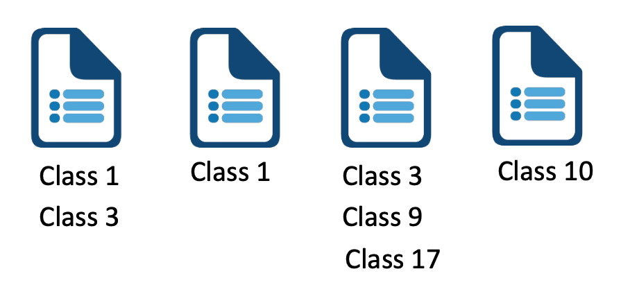
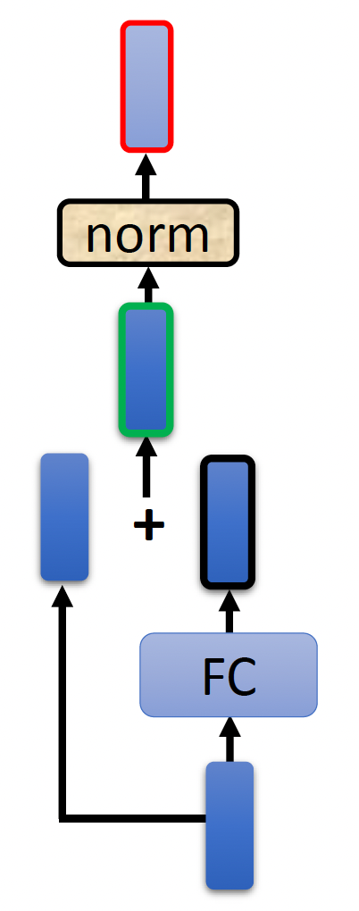

Transformer⚓︎
约 3669 个字 预计阅读时间 18 分钟
Sequence-to-sequence (Seq2seq)⚓︎
现在我们考虑一种输入和输出都是序列(sequence) 的模型。这类模型的输出长度由模型自己决定。像语音识别，机器翻译，语音翻译等场景下的模型都属于这类模型。
下面介绍一些 Seq2seq 的具体应用：
例子
在训练的时候，我们不去考虑：
- （肥皂剧的）背景音乐和噪音
- （和声音对不上的）字幕
- 闽南语的发音
像这样不去考虑各种因素，直接拿数据训练的行为，李宏毅老师称之为“硬 train 一发”~
其实很多自然语言处理 (NLP) 的任务都可以看作是问题回答 (QA) 的任务，即使是一些看上去和 QA 没啥关系的任务也都可以想象成是 QA，比如机器翻译，为文章做摘要，情感分析 (sentiment analysis)（下图就是其中一个例子）等任务。
而 QA 这类问题就可以用 seq2seq 的模型来解决，相应的示意图如下所示：
但需要注意的是，多数 NLP 任务，特别是和语音相关的任务，往往需要为这些任务定制模型，这样才能得到更好的结果；换句话说，seq2seq 模型就像一把瑞士军刀，什么都能做，但给出的结果不一定是最好的。
注意
不要和前面介绍过的多类分类 (multi-class classfication) 弄混淆（前面介绍的分类都属于这种

多标签分类任务允许某个对象属于多个类中（而原先介绍的分类问题每个对象仅属于一个类）
上面的众多例子是想让读者感受到 seq2seq 模型的强大！
那么 seq2seq 模型具体是如何实现的呢？一般的 seq2seq 模型的组成如下所示：
- 编码器(encoder)：处理输入序列，并将处理好的结果传给解码器
- 解码器(decoder)：决定输出序列
下面这篇 paper 是 seq2seq 模型的最早起源：
当然，最知名的模型莫过于 Transformer（它也是目前众多主流 LLM 的基石，可见其重要性
Transformer⚓︎
Encoder⚓︎
简单来说，编码器要做的事就是对于给定的一组（输入）向量，输出一组向量。也许读者会想：之前介绍的 RNN 或 CNN 也能完成这样的任务，那么这个编码器的高明之处在哪里呢？那我们就得关注编码器的具体实现了（右图）~
当然右图的结构有些复杂，所以下面给出简化后的样子：
可以看到，编码器内部被划分成多个块 (block)，每个块要做的就是接收一组向量，然后输出新的一组向量，传递给下一个块。而每个块内部的实现如下——实际上用的就是前面刚介绍的自注意机制 + 全连接神经网络
注意：前面的实现是简化过的，在 Transformer 中真正的实现是长这样子的（就拿其中一个输入向量分析
- 记经过自注意处理得到的向量为 \(\bm{a}\)，原输入向量为 \(\bm{b}\)
- 先做一次残差连接(residual connection)：\(\bm{a} + \bm{b}\)
-
然后将残差连接后的结果做层归一化(layer normalization) 处理
-
归一化要做的就是： $$ \begin{bmatrix}x_1 \ x_2 \ \dots \ x_K\end{bmatrix} \Rightarrow \begin{bmatrix}x_1' \ x_2' \ \dots \ x_K'\end{bmatrix} $$
其中 \(x_i' = \dfrac{x_i - m}{\sigma}\)，\(m, \sigma\) 分别为原向量的均值和标准差
-
-
接着将层归一化后的向量传给 FC，做和自注意机制类似的处理（重复上面的步骤
） ：图中红色边框的向量才是一个块的输出向量
上面的分析其实还漏了一些细节：
知名的 BERT 模型采用和 Transformer 编码器相同的网络架构。
原始的 Transformer 编码器中各模块的排列顺序不一定是最好的——有一些研究就是从这里出发做出一些改进：
Decoder⚓︎
解码器有 2 种，比较常见的是自回归(autoregressive) 的解码器，所以先来介绍这个。
Autoregressive (AT)⚓︎
下面以语音识别这一应用为例介绍。
- 解码器读取编码器的输出（至于怎么读之后再说）
- 解码器还接收一个表示开始 (START) 的特殊记号，这个记号可以用一个独热向量来表示
- 解码器输出的向量长度和词汇表（这里包含了所有常见的汉字）的长度一致（因此很长）
- 在解码器生成向量前要经过 softmax 处理（类似做分类任务
） ，使得向量所有元素之和 = 1，此时输出向量就是一个概率分布(distribution) - 向量元素值最大的对应的字就是最终的输出
接下来就要将第一个输出（上图的“机”）作为解码器的第二个输入（也用独热向量表示
解码器的内部结构如下（比编码器更复杂
我们将编码器和解码器的结构图放在一起看，发现如果将解码器中间的模块遮起来后，二者的结构几乎一模一样，除了：
- 因为解码器输出的是一个概率而非向量，因此最后要做一步 softmax 处理
- 解码器的自注意是一种掩码 (masked) 多头自注意，下面就来分析其细节
先来回顾一下一般的自注意机制的样子：
而这是掩码后的自注意机制：
不难发现，在掩码版本的自注意机制中，输出向量 \(\bm{b}^i\) 只能读取其左边的输入向量（从 \(\bm{a}^1\) 到 \(\bm{a}^{i}\)
但为什么要这么做呢？答案就在解码器的工作机制中——前面提到过，解码器第 \(i\) 个位置上的输出向量是根据之前的输出向量（左侧）得到的，所以它只知道前面的向量是什么，无法得知所有的输入向量。这就是为什么解码器的自注意比较特殊的原因。
由于我们无法预先得知正确的输出长度，所以如果不加处理的话，模型可能会一直输出下去，停不下来了，这显然不符我们的预期。
和解码器最初接收的 START 特殊记号一样，我们引入一种停止记号，记作 END。对于前面“机器学习”这四个字的语音识别，我们要求解码器在看到 BEGIN 记号和这四个字对应的输入向量后，就知道语音识别要结束了，应该输出 END 记号，从而结束输出。
Non-Autoregressive (NAT)⚓︎
下面仅简单介绍 NAT。
对比自回归 (AT) 和非自回归 (non-autoregressive, NAT) 这两类解码器：
不同于 AT 解码器一次只吐一个输出，NAT 解码器可以一次性吐出所有输出；并且 NAT 接收的是输入都是 BEGIN 记号。
- 如何决定 NAT 解码器的输出长度
- 用一个预测器来决定
- 允许输出一个非常长的序列，但是忽略 END 记号后面的输出
- 优点：并行程度高，更易控制输出长度
- 但 NAT 通常不敌 AT（原因：多模态(multi-modality)，这里不具体展开）
Encoder-Decoder⚓︎
接下来考虑前面被我们忽略掉的一个问题：编码器和解码器之间是如何传递数据的？这个结构就藏在前面被遮挡的解码器模块——交叉注意(cross attention) 中：
注意到该模块有 3 个输入，其中有 2 个输入来自编码器的输出（蓝圈表示
其实和一般的自注意很像，不同之处在于 \(\bm{k}, \bm{v}\) 和 \(\bm{q}\) 是来自两个不同的地方（这应该就是 cross 的含义
交叉注意的实际案例如下（注意：下图不来自于 Transformer
上图是编码器的输入（一列表示一个向量
） ，下图是解码器的输出
还有人研究了不同的交叉注意的效果：
Training⚓︎
前面只介绍了 Transformer 模型的运作机制（对应模型的测试(testing) 或推理(inference)
还是以“机器学习”这四个字的语音识别为例——
模型训练的目标就是让输出向量（概率分布）和基准事实(ground truth)（一种独热向量，就是标准答案）之间的差距越小越好。而这个差距就用交叉熵(cross entropy) 来量化（和分类差不多
常用的一种训练方法叫做教师强迫(teacher forcing)（好奇怪的术语
读者不难想到，这样的训练方法存在问题：测试的时候我们是让解码器读取前面的输出作为输入的，但训练的时候却读取基准事实，这中间就不太匹配。这个问题在后面会得到解决，先暂时放一下。
Tips⚓︎
注意
这里的 tips 不局限于 Transformer，其他的 seq2seq 模型同样适用。
Copy Mechanism⚓︎
一般我们要求解码器自己产生输出，但有时解码器没有必要自己创造输出，而是从输入中复制一部分内容作为输出，这便是复制机制(copy mechanism)。下面列出一些可以用到这种技术的场景：
例子

最早具备这种复制机制的模型是指针网络(pointer network)，之后还有一种称为复制网络 (copy network) 的变体，这里就不展开介绍了。
Guided Attention⚓︎
问题
在语音合成时，可能会遇到以下古怪的问题：
当机器连说多个“发财”的时候是正常的，但只说一个“发财”的时候，机器就只说了“财”没说“发”。这意味着模型可能漏掉了一个输入。
像语音合成、语音识别这样的任务，输入和输出都是单调对齐的 (monotonically aligned)，就很有可能出现类似上面的问题。解决方案是一种被称为导向注意(guided attention) 的技术，强迫模型以固定的方式读取每一个输入。
以语音合成为例，我们希望模型的输出顺序是从左向右的，所以在运行的时候会为模型提供一个注意权重(attention weight)（或者注意分数
如果不加这种约束，就很有可能出现这种乱序的情况，这显然是有问题的：
具体的导向注意应用有：
- 单调注意 (monotonic attention)
- 位置感知注意 (location-aware attention)
Beam Search⚓︎
注
假设解码器只有两个可能的输出 A 和 B。
下面的树状图列出了模型所有可能的输出情况
- 红色路径是贪心解码(greedy decoding)
- 绿色路径是最好的路径
要想找到最好的路径，最简单的做法是暴力搜索，把所有可能的路径遍历一遍。但路径树是可能输出数的指数，所以可能的输出数很多的时候，路径数就会变得特别大，显然是无法全部遍历一遍的。这时就要采用一种称为束搜索(beam search) 的近似算法，寻找近似解。一件有趣的事是，该算法有时得到不错的结果，有时结果会很烂。
比如这篇 paper，两张图分别展示了用了束搜索和没用的结果。可以看到前者会陷入一个死循环（蓝色部分
Optimizing Evaluation Metrics⚓︎
课程作业采用的评估标准是 BLEU score，它的做法是将解码器输出的完整句子和正确答案比较，也就是以句为单位做比较。但我们训练模型的时候是一个词一个词看的，分开来看每个词的交叉熵的。两者的关联不大，因此让交叉熵最小化不一定能提高 BLEU 分数。
那么怎样做优化呢？一个口诀是：如果不知道如何优化的话，那就用强化学习(RL) 解决！
Scheduled Sampling⚓︎
前面还放跑了一个问题：测试（左图）和训练（右图）结果的不匹配，这种现象称为暴露偏移(exposure bias)。由于测试的时候解码器读取的是之前的输出，假如之前的输出是错的，那么解码器就会根据这个错误的输入来接着输出，这样很有可能导致“一步错，步步错”的情况。
一种解决思路是：在训练的时候不要完全用基准事实，可以偶尔给一些错误的输入，这样反而模型会学的更好。这种技术称为调度采样(scheduled sampling)。
下面是一些有关该技术的参考资料，感兴趣的读者可自行到网上搜寻。
评论区